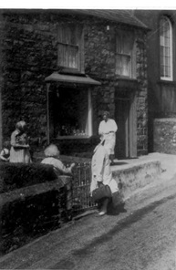

Alpha Siop
Hen siop Ann Williams, ac yna M.J. Williams, y mab a George Williams ei nai wedi hynny. Bu Ann Williams yn cadw siop yn Tŷ Croes cyn symud i Siop Alpha, a arferai fod yn siop lestri. Roedd cist o dan y cownter yn cadw bagiau papur ar ffurf côn er mwyn pwyso te rhydd. Roedd stordy i gadw paraffin, finag ac yn y blaen dros y ffordd. Cadwai Will George garpedi a nwyddau mawr yno. Yn 1881 roedd Hugh Williams, y bwtsiar yn byw yno. Yn 1891 roedd Catherine Davies yn cadw siop groser yno.
Ffeithiau'r Cyfrifiad:
Alpha Shop, Tydfil Williams y siopwraig wrth y drws